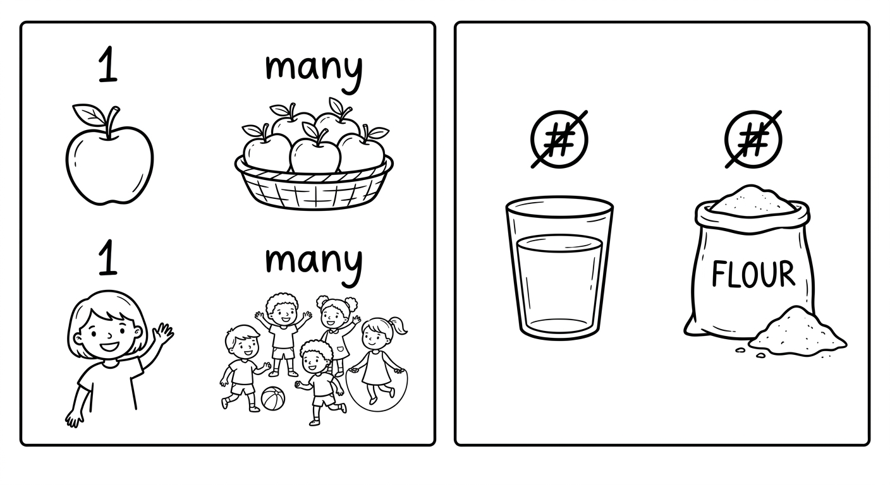
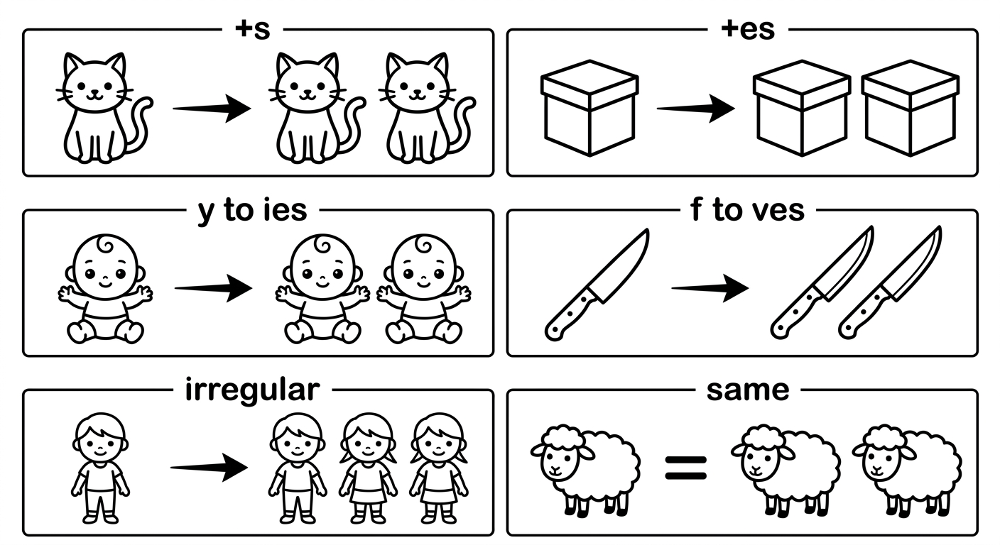
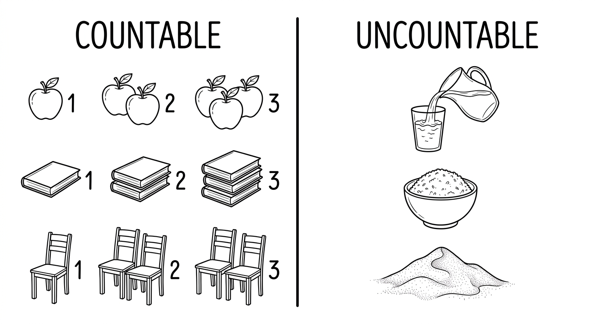
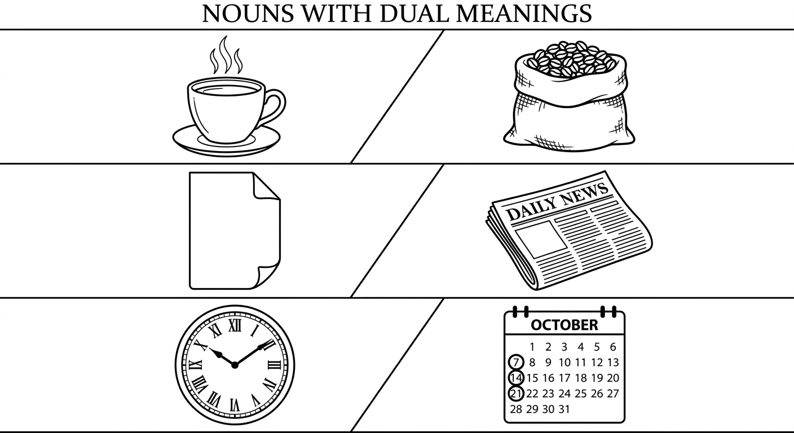
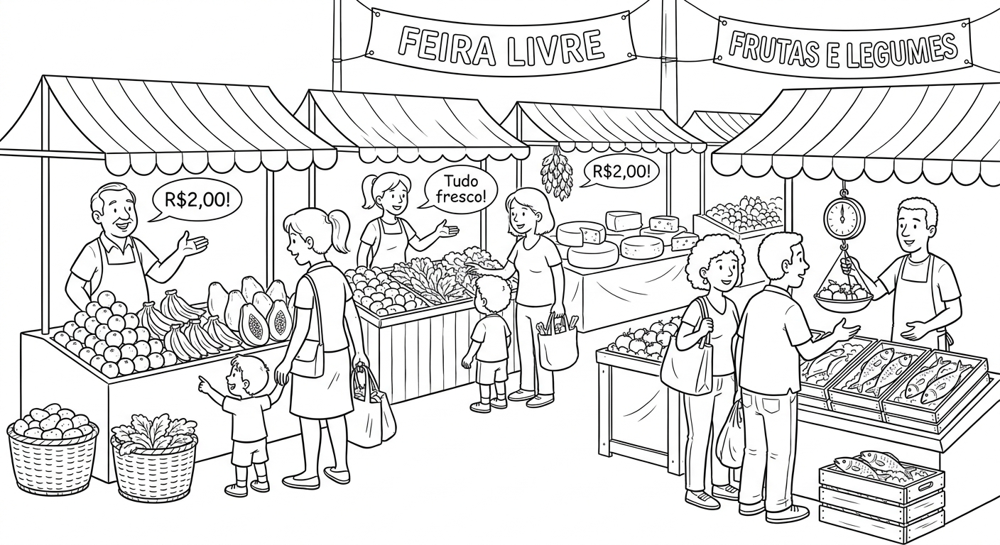
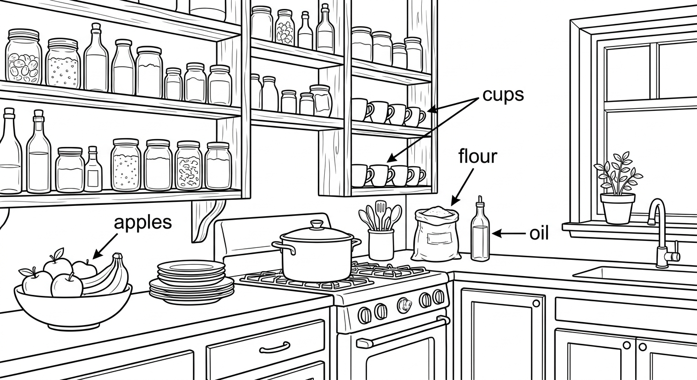

Plurality of Words: Numbers in Nouns
In this chapter you will master the rules for forming plural nouns in English, including regular and irregular forms. You will also learn the difference between countable and uncountable nouns, and how to use the correct quantifiers with each type. By the end, you will be able to use plurals and uncountable nouns accurately in reading, writing, and everyday conversation.

Plural Formation Rules
Most English nouns can be made plural, but the rules for forming plurals are not always simple. In this unit we will study the regular rules first, then look at the many irregular forms that you need to memorise.
Regular Plural Rules
| Rule | Ending | Example |
|---|---|---|
| Most nouns | add -s | book → books, car → cars, dog → dogs |
| Nouns ending in -s, -ss, -sh, -ch, -x, -z | add -es | bus → buses, glass → glasses, brush → brushes, match → matches, box → boxes |
| Nouns ending in consonant + y | change y → ies | city → cities, baby → babies, story → stories |
| Nouns ending in vowel + y | add -s | key → keys, day → days, boy → boys |
| Nouns ending in -f or -fe | change f/fe → ves | knife → knives, leaf → leaves, wife → wives, wolf → wolves |
| Nouns ending in -o (with consonant before) | add -es (most cases) | tomato → tomatoes, potato → potatoes, hero → heroes |
| Nouns ending in -o (music/foreign origin) | add -s | piano → pianos, photo → photos, video → videos |
Irregular Plurals
These nouns do not follow regular rules. You must memorise them:
| Singular | Plural | Português |
|---|---|---|
| child | children | criança / crianças |
| man | men | homem / homens |
| woman | women | mulher / mulheres |
| tooth | teeth | dente / dentes |
| foot | feet | pé / pés |
| mouse | mice | rato / ratos |
| person | people | pessoa / pessoas |
| goose | geese | ganso / gansos |
| ox | oxen | boi / bois |
| cactus | cacti | cacto / cactos |
Same singular and plural: sheep → sheep, fish → fish, deer → deer, aircraft → aircraft, species → species

| Singular | Plural | Português | Plural Rule |
|---|---|---|---|
| address | addresses | endereço / endereços | +es (-ss ending) |
| butterfly | butterflies | borboleta / borboletas | y → ies |
| church | churches | igreja / igrejas | +es (-ch ending) |
| dictionary | dictionaries | dicionário / dicionários | y → ies |
| family | families | família / famílias | y → ies |
| half | halves | metade / metades | f → ves |
| journey | journeys | viagem / viagens | +s (vowel + y) |
| leaf | leaves | folha / folhas | f → ves |
| loaf | loaves | pão (inteiro) / pães | f → ves |
| monkey | monkeys | macaco / macacos | +s (vowel + y) |
| potato | potatoes | batata / batatas | +es (-o ending) |
| sandwich | sandwiches | sanduíche / sanduíches | +es (-ch ending) |
| shelf | shelves | prateleira / prateleiras | f → ves |
| thief | thieves | ladrão / ladrões | f → ves |
| tomato | tomatoes | tomate / tomates | +es (-o ending) |
| tooth | teeth | dente / dentes | irregular |
| university | universities | universidade / universidades | y → ies |
| wife | wives | esposa / esposas | fe → ves |
Examples in Context
There are 40 students in Fernanda's class at the university.
Há 40 alunos na turma da Fernanda na universidade.
Lucas packed three sandwiches for the school trip.
Lucas preparou três sanduíches para o passeio da escola.
There are many libraries in the city of São Paulo.
Há muitas bibliotecas na cidade de São Paulo.
In autumn, the leaves on the shelves of the garden wall turn brown.
No outono, as folhas nas prateleiras do muro do jardim ficam marrons.
The children ran barefoot, and their feet got dirty.
As crianças correram descalças e os pés delas ficaram sujos.
The farmer has twenty sheep and a hundred fish in his pond.
O fazendeiro tem vinte ovelhas e cem peixes no lago dele.
Brazilian Portuguese speakers often add -s to nouns that are uncountable in English. Be careful with these:
- Wrong: "informations" → Correct: "information" (a piece of information)
- Wrong: "furnitures" → Correct: "furniture" (a piece of furniture)
- Wrong: "advices" → Correct: "advice" (a piece of advice)
- Wrong: "equipments" → Correct: "equipment" (a piece of equipment)
- Wrong: "homeworks" → Correct: "homework"
In Portuguese, "informações", "móveis", "conselhos" are all plural, but in English they are uncountable!
Suggested time: 30 minutes
Warm-up (5 min): Write 10 singular nouns on the board (a mix of regular and irregular). Ask students to write the plurals on paper. Then compare answers as a class. This quickly reveals which rules students already know and where gaps exist.
Teaching tip: At B2 level, students should already know most regular plural rules. Focus class discussion on the tricky cases: the -f/-fe → -ves rule (many students write "leafs" or "knifes"), the consonant-before-o rule (tomatoes vs. photos), and especially the L1 interference items listed in the callout above.
Extension activity: Have students work in pairs to create a quiz of 5 challenging plurals for another pair to solve.
Write the correct plural form of the noun in brackets.
Select the correct plural form of the underlined noun.
The child played in the park all afternoon.
b) The children played in the park all afternoon.Rodrigo bought a new dictionary for his English class.
c) Rodrigo bought new dictionaries for his English class.The farmer counted every sheep in the field.
a) The farmer counted all the sheep in the field.Marina cut the bread with a sharp knife.
b) Marina needs two sharp knives for the kitchen.A cactus grows well in dry weather.
c) Both a) and b) are acceptable.Countable vs Uncountable Nouns
In English, nouns are divided into two main categories: countable and uncountable. Understanding this distinction is essential because it affects the articles, quantifiers, and verb forms you use with each noun. This is one of the most common areas of difficulty for Portuguese speakers, because many nouns that are countable in Portuguese are uncountable in English.

Countable Nouns vs Uncountable Nouns
| Feature | Countable Nouns | Uncountable Nouns |
|---|---|---|
| Can be counted? | Yes (one apple, two apples) | No (NOT "one rice", "two rices") |
| Has a plural form? | Yes (book → books) | No (water is always "water") |
| Can use a/an? | Yes (a book, an apple) | No (NOT "a water", "an information") |
| Can use a number? | Yes (three books) | No (NOT "three waters") |
| Use with "some" | some books (= a few) | some water (= a quantity of) |
| Use with "much/many" | many books (NOT "much books") | much water (NOT "many water") |
| Use with "a few/a little" | a few books | a little water |
| How to count? | Use the number directly: two chairs | Use a measure word: two glasses of water, a piece of advice |
| Countable Nouns | Uncountable Nouns | ||
|---|---|---|---|
| English | Português | English | Português |
| apple | maçã | water | água |
| book | livro | rice | arroz |
| bottle | garrafa | milk | leite |
| chair | cadeira | bread | pão |
| coin | moeda | money | dinheiro |
| egg | ovo | sugar | açúcar |
| job | emprego | work | trabalho |
| letter | carta | correio | |
| suitcase | mala | luggage | bagagem |
| suggestion | sugestão | advice | conselho |
| report | relatório | information | informação |
| table | mesa | furniture | mobília |
Examples Showing Usage Differences
Beatriz ate an apple and two bananas for breakfast.
Beatriz comeu uma maçã e duas bananas no café da manhã.
She also drank some milk and ate some bread.
Ela também bebeu um pouco de leite e comeu um pouco de pão.
How many eggs do we need for the cake?
Quantos ovos precisamos para o bolo?
How much sugar do you want in your coffee?
Quanto açúcar você quer no seu café?
Carlos has a few coins in his pocket.
Carlos tem algumas moedas no bolso.
There is a little money left in the jar.
Há um pouco de dinheiro sobrando no pote.
Can I have a glass of water, please?
Posso tomar um copo de água, por favor?
Dona Maria gave me a piece of advice about studying abroad.
Dona Maria me deu um conselho sobre estudar no exterior.
The meaning changes depending on whether the noun is used as countable or uncountable:
- coffee (uncountable) = the drink in general: "I love coffee." / a coffee (countable) = a cup of coffee: "I'd like a coffee, please."
- paper (uncountable) = the material: "This is made of paper." / a paper (countable) = a newspaper or academic article: "I read a paper about climate change."
- time (uncountable) = the concept: "Time flies!" / a time (countable) = an occasion: "I visited Bahia three times."
- glass (uncountable) = the material: "The window is made of glass." / a glass (countable) = a drinking container: "I need two glasses."
- chicken (uncountable) = the meat: "I had chicken for lunch." / a chicken (countable) = the animal: "There are five chickens in the yard."

Suggested time: 30 minutes
Key concept: The countable/uncountable distinction is often the most challenging grammar concept for Portuguese speakers at this level. In Portuguese, "informação/informações", "conselho/conselhos", and "mobília/mobílias" all have regular plural forms, so students naturally transfer this to English.
Activity idea (10 min): Bring pictures or real objects to class (a bag of rice, an apple, a bottle of water, some coins). Hold up each item and ask: "Can I count this? Can I say 'one rice' or 'two rices'?" This concrete, physical demonstration helps the abstract concept become real.
Pair work (5 min): Students test each other: one says a noun, the other says "countable" or "uncountable" and uses it in a short sentence with the correct quantifier.
Common errors to address: "I need an advice" (should be "a piece of advice"), "She has many luggages" (should be "a lot of luggage"), "I have many homeworks" (should be "a lot of homework").
Write C (Countable) or U (Uncountable) next to each noun.
Fill in the blank with a, an, some, or — (leave empty if no article is needed). Think about whether the noun is countable or uncountable.
Reading: Shopping at the Market

Shopping at the Market
Every Saturday morning, the Oliveira family goes to the open-air market near their home in Belo Horizonte. The children, Pedro and Isabela, love going to the feira because there is always so much to see, smell, and taste.
Their mother, Dona Cláudia, always brings a long shopping list. She usually needs some rice, some bread, a few eggs, and plenty of fruit. Today the list also includes three kilos of potatoes, two loaves of bread, some cheese, and a kilo of tomatoes.
At the fruit stall, Pedro counts the oranges: "Mum, how many oranges do we need?" Dona Cláudia thinks for a moment: "Let's get a dozen. And grab some bananas too — a bunch should be enough."
Isabela is more interested in the vegetable stall. She points at the carrots, onions, and lettuces. "Can we make a salad tonight?" she asks. "Of course!" says Dona Cláudia. "We'll need two lettuces, some tomatoes, and a little olive oil."
Their father, Seu Ricardo, goes straight to the fish stall. He buys some fish — enough for the whole family. The vendor wraps the fish in paper and puts them in a bag. "How much is it?" asks Seu Ricardo. "Twenty-five reais for everything, sir," answers the vendor.
On their way out, the children stop at the pastel stall. Pedro wants a pastel de carne, and Isabela wants a pastel de queijo. Dona Cláudia smiles and orders four pastéis — one for each member of the family. She also asks for some sugar cane juice for everyone.
By the end of the morning, they have several bags full of food. There are potatoes, tomatoes, carrots, eggs, fish, cheese, bread, fruit, and of course, very full stomachs from the pastéis!
Dona Cláudia carries the heaviest bags — the ones with rice and potatoes. Seu Ricardo carries the luggage with the fish and cheese. The children carry the fruit and are already planning next Saturday's trip to the feira.
Suggested time: 25 minutes (10 for reading, 15 for exercises)
Pre-reading (5 min): Ask students: "Do you go to a feira with your family? What do you usually buy?" This activates schema and makes the text more relatable for Brazilian students.
During reading: Ask students to underline all the plural nouns and circle all the uncountable nouns as they read. After reading, compare findings in pairs.
Vocabulary note: The text deliberately uses "pastéis" (Portuguese plural) in dialogue to reflect natural speech. Use this as a discussion point: "In English, how would we say this? 'Four pastels' or 'four pastéis'?" — in English, the borrowed word would typically follow English plural rules or remain in its original form.
Cultural connection: The feira is a deeply Brazilian cultural experience. Encourage students to describe their own feira experiences in English.
Read the statements and write T (True) or F (False) based on the reading passage.
Answer the questions based on the reading passage. Write complete sentences.
What does Dona Cláudia need for the salad?
She needs two lettuces, some tomatoes, and a little olive oil.How much does Seu Ricardo pay for the fish?
He pays twenty-five reais for the fish.Find two uncountable nouns in the text that describe food items.
Possible answers: rice, bread, cheese, fruit, fish (when referring to the food), olive oil, sugar cane juice.Find two plural nouns in the text and explain what rule they follow.
Possible answers: potatoes (+es, -o ending), tomatoes (+es, -o ending), children (irregular), oranges (+s regular), carrots (+s regular), loaves (f→ves), lettuces (+s regular), stomachs (+s regular).Writing Task: What Is in Your Kitchen?
Now it is your turn to practise using plural nouns and uncountable nouns in your own writing. You will describe the items you can find in your kitchen or another room in your house.

Write a paragraph (8-12 sentences) describing what you can find in your kitchen or another room in your house. Follow the guidelines below:
- Use at least 5 plural nouns (both regular and irregular).
- Use at least 3 uncountable nouns with correct quantifiers (some, a little, much, a lot of).
- Use at least 2 measure words (a bottle of, a bag of, a piece of, etc.).
- Include both many (for countable) and much or a lot of (for uncountable) at least once each.
Example beginning:
In my kitchen, there are many plates and cups in the cupboard. On the counter, there is a bag of rice and some flour for making bread. My mother always keeps a few bananas and some oranges in a bowl on the table. We don't have much sugar left, so we need to buy more. There are three bottles of water in the fridge and a little milk for our coffee...
Now write your paragraph:
Before you start writing, make a quick list of items in your kitchen. Divide them into two columns: countable and uncountable. This will help you plan your sentences and make sure you use the correct articles and quantifiers.
Remember: for uncountable nouns, you cannot write "a rice" or "two breads". Instead, use measure words like "a bag of rice" or "two loaves of bread".
Suggested time: 20 minutes (5 for planning, 15 for writing)
Scaffolding: For weaker students, provide a word bank on the board:
- Countable: plates, cups, spoons, forks, knives, bottles, eggs, apples, oranges, bananas, chairs, shelves
- Uncountable: water, rice, flour, sugar, salt, oil, bread, milk, coffee, juice, butter, cheese
- Measure words: a bag of, a bottle of, a box of, a jar of, a piece of, a kilo of, a cup of, a glass of
Assessment criteria:
- Correct plural forms (at least 5 different plurals)
- Correct use of uncountable nouns without plural -s (at least 3)
- Appropriate quantifiers (some, a few, a little, many, much, a lot of)
- At least 2 measure words used correctly
- Clear, well-organised paragraph (8-12 sentences)
Peer review: After writing, have students swap papers and check their partner's work. Can they find any nouns that have the wrong plural form? Any uncountable nouns with a plural -s? This is an effective way to reinforce the lesson.
Chapter 2 - Answer Key
Exercise 1: Write the Plural Form
Exercise 2: Choose the Correct Plural
Exercise 3: Sort: Countable or Uncountable?
Exercise 4: Complete with a, an, some, or — (nothing)
Exercise 5: True or False
Exercise 6: Answer the Questions
Writing Task: Describe Your Kitchen
Answers will vary. Check for: correct plural forms (at least 5 different plurals), correct use of uncountable nouns without plural -s (at least 3), appropriate quantifiers (some, a few, a little, many, much, a lot of), at least 2 measure words used correctly (a bag of, a bottle of, etc.), and a clear, well-organised paragraph of 8-12 sentences.